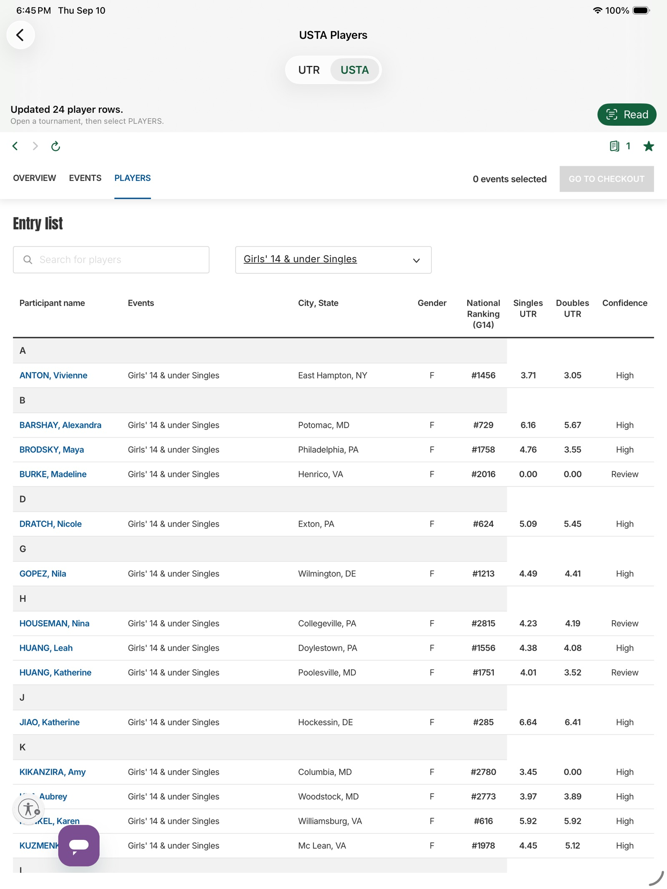
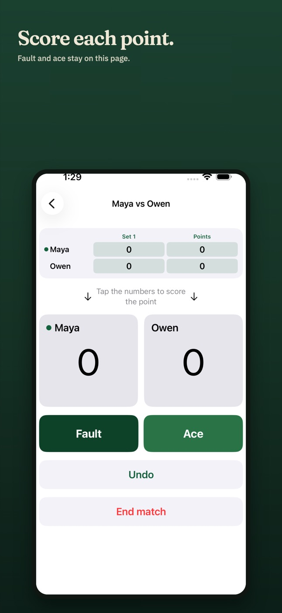
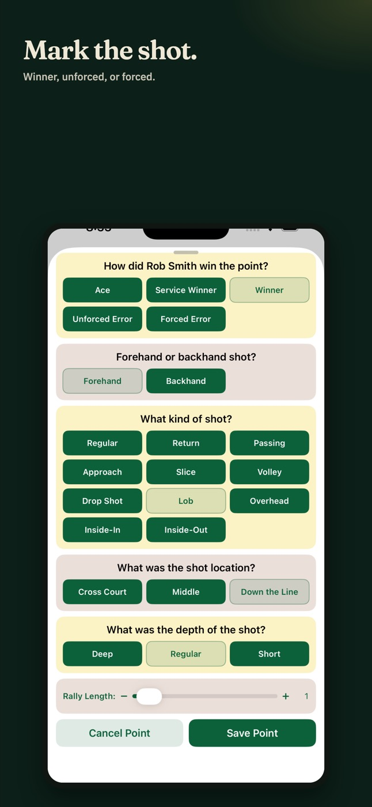
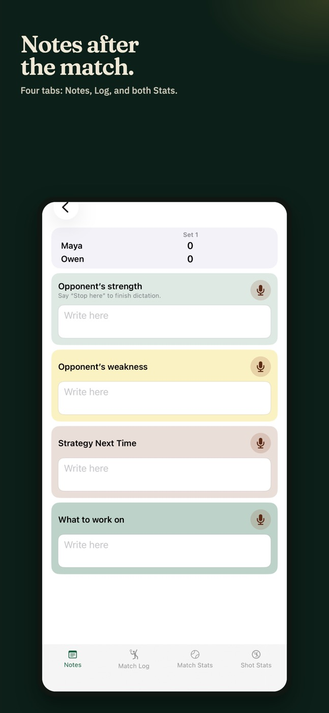

For tennis parents and coaches
Read the roster.
Score the match.
MainDraw looks up National Ranking and UTR on a USTA Players list, then records each point with notes, stats, and a point log in the same app.
Free to download · iPhone & iPad · iOS 17+
Unofficial tool. Not affiliated with, endorsed by, or sponsored by USTA or Universal Tennis.


Look Up
Four taps from search to rankings
-
1
Find the event
USTA Search opens Find Tournaments with Sort & Filter ready. Search by location, dates, and junior or adult. Save the setup from Searches when you will run it again.
-
2
Open Players
Open the tournament, then the Players tab. Overview and Draws are not enough—Read needs the entry list on screen.
-
3
Read the roster
One tap extracts the names. Singles stay one player per row; doubles teams stay paired.
-
4
Look Up
National Ranking, UTR, and match confidence land in columns you can sort. Sign in to Universal Tennis once on Sites → UTR. Choose one event first—All events is not a list you can look up.
Scorecard
Mark every point, then keep what matters
-
1
Start the match
Open Scorecard, set the opponent and player, then tap Start Match. Scoring stays on its own page—no bottom tabs while you play.
-
2
Tap the winner
Tap a name for each point. Fault and Ace sit under the score. Detailed mode asks how the point ended: stroke, direction, depth, and the miss.
-
3
Write the notes
After the match, Notes keeps the score, place, and weather, then four fields: strength, weakness, strategy next time, and what to work on. Say “Stop here” to finish dictation.
-
4
Read the match
Stats, By Shot, and Point Log open from the same match. Games in the log stay folded until you tap one open.


Also in the app
Filters, saved lists, and the draw
-
Save a filter
Set Sort & Filter on USTA Search, then tap Searches beside Results. Name it with Save Current Filters. Next time, open that name and the same location, dates, and divisions come back.
-
Remember the list
Each event is saved with its tournament for 7 days. Opening Players shows the original USTA table until you select an event you already looked up in that tournament.
-
UTR on the draw
During those 7 days, the Draw adds Singles UTR or Doubles UTR beside each saved player. You do not Look Up the Draw itself.
-
Two ages, one list
If a player entered two ages, the national ranking matches the list on screen. Look up Girls 14 and Girls 16 separately.
On the tab bar
Four places you actually live
-
Home
How to Use, Try Demo, plans, privacy, and support. The rest of the app stays one tap away.
-
Sites
USTA and UTR live here. Sign in to Universal Tennis on UTR. Open the full USTA site when you already have a Players page or a bookmark.
-
USTA
Accounts, Calendar, and Search. Switch a family player, open that child’s schedule, find tournaments, and save a Sort & Filter setup.
-
Scorecard
Record each point of a singles match. Afterward, open Notes, Stats, By Shot, and Point Log. Free for 30 days with Look Up, then needs a subscription.
No accounts required
Try Demo on the Home tab
Demo Mode uses an offline sample roster. Tap Read, then Look Up, and see the annotated columns without USTA or Universal Tennis sign-in. Scorecard stays on its own tab when you want to practice marking a match.
- Download
- Free
- Trial
- 30 days Look Up + Scorecard
- Then
- $0.99 / month or $9.99 / year
- Always free
- Browse, bookmarks, Demo
Questions
What parents usually ask
What is MainDraw?
An unofficial iOS app that reads a USTA tournament Players list, looks up National Ranking and UTR, and scores each point of a match with notes, stats, and a point log. Built for parents and coaches who otherwise bounce between USTA, Universal Tennis, and a paper card.
Is this an official USTA or UTR app?
No. MainDraw is not affiliated with, endorsed by, or sponsored by USTA or Universal Tennis. You use your own accounts and are responsible for following their terms.
What does Scorecard do?
Scorecard records each point of a singles match on its own scoring page. Tap a name for the point, or use Fault and Ace. After the match, open Notes, Stats, By Shot, and Point Log. Notes keep the score, place, weather, and four reflection fields. You can dictate into a note and say “Stop here” to finish.
Do I have to subscribe to browse tournaments?
No. Browsing USTA and UTR pages, bookmarks, and Demo Mode stay available without a subscription. Look Up and Scorecard are free for 30 days after a new install, then need a monthly or yearly plan through Apple.
Can I save a tournament filter?
Yes. On the USTA tab, open Search, set location, dates, and the other filters, then tap Searches beside Results and Save Current Filters. Give it a name. Opening that name later fills Sort & Filter again. Use Manage Saved Searches to rename, reorder, or delete one.
Does the Draw show UTR?
After Look Up on a Players list, that event stays with the tournament for 7 days. The Draw then shows Singles UTR or Doubles UTR beside each saved player. You do not run Look Up on the Draw. If a player entered two ages, the ranking matches the list you are viewing.
How do family / child accounts work?
Sign in as the parent on USTA → Accounts, pick a child, and MainDraw opens that player’s Upcoming and Completed schedule. From a tournament, open Players, then Read and Look Up—the same flow as USTA in Sites.
Where does my login data go?
USTA and Universal Tennis session cookies stay on your device. MainDraw does not operate its own user accounts or upload those sessions to a MainDraw server. Look Up calls those services directly from the phone. Scorecard matches stay on this iPhone. See the privacy policy.
How do I get help?
Email taobo2000@gmail.com. Manage or cancel a subscription in iOS Settings → Apple ID → Subscriptions.